This work also relies upon an edge diffusion optimization method for central view depth (available here):
@techreport(khan2020falfd,
title={Fast and Accurate {4D} Light Field Depth Estimation},
author={Numair Khan, Min H. Kim, James Tompkin},
year={2020},
institution={Brown University},
number={CS-20-01},
}
 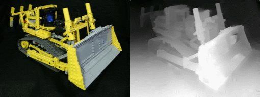
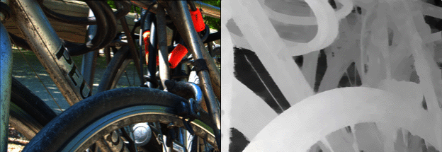
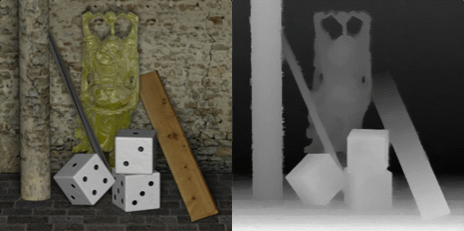
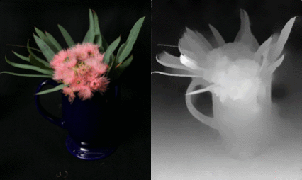
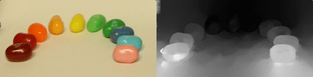
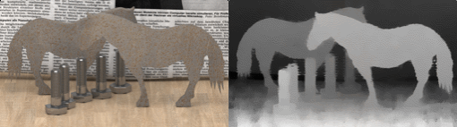
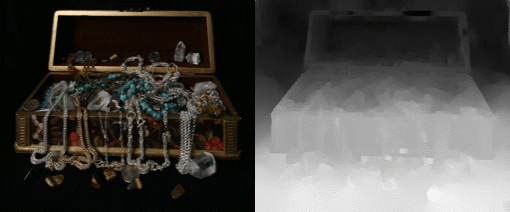
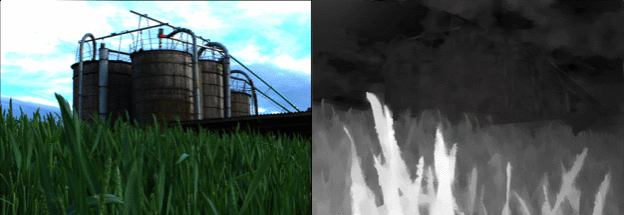
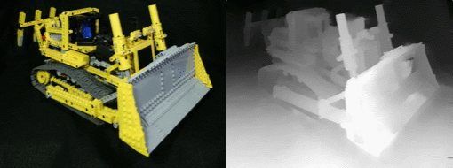
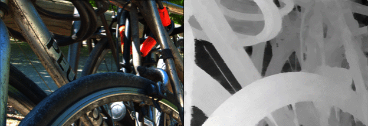
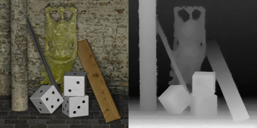
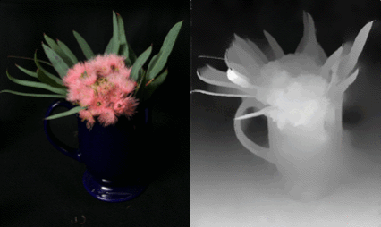
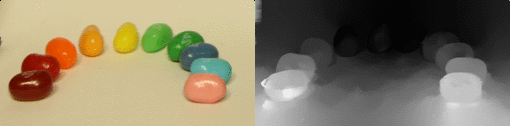
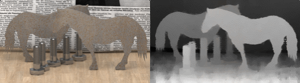
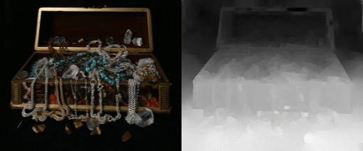
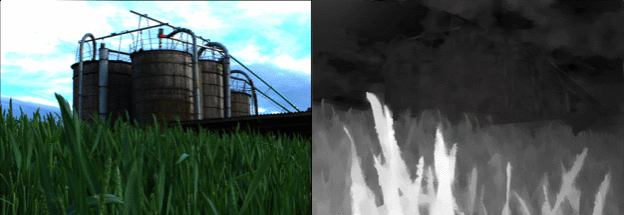